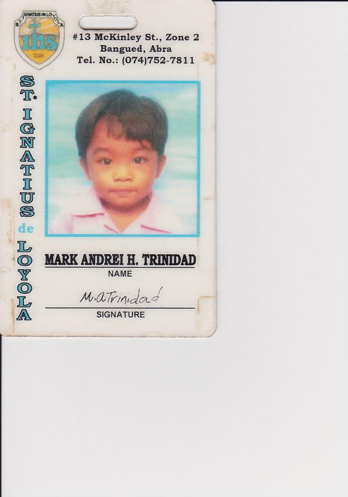
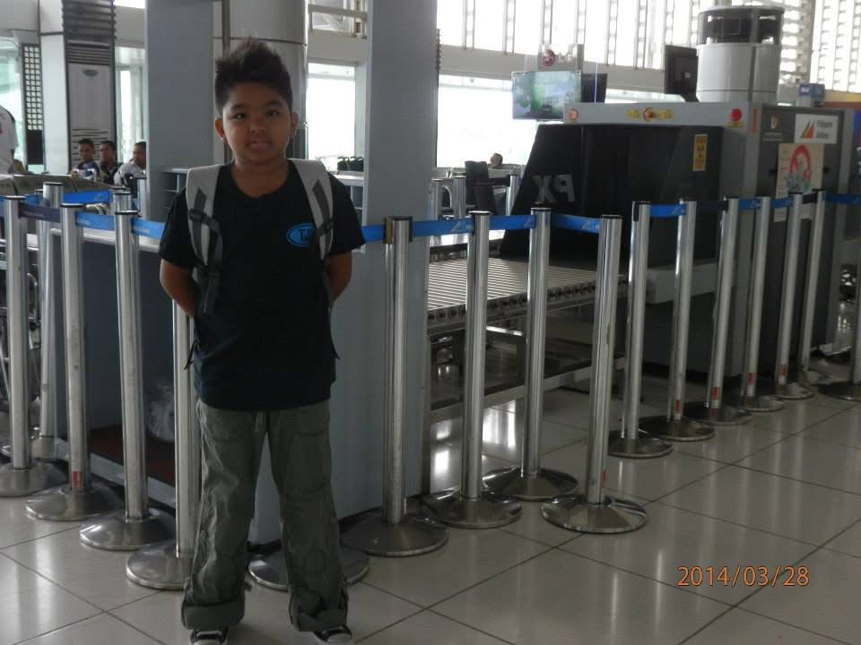
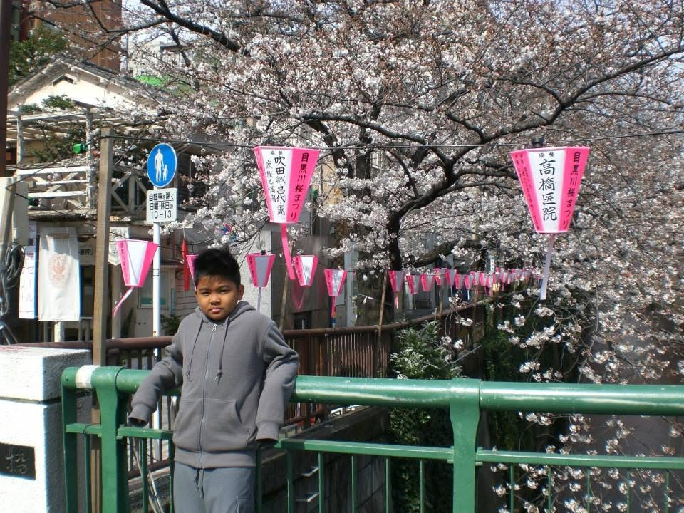
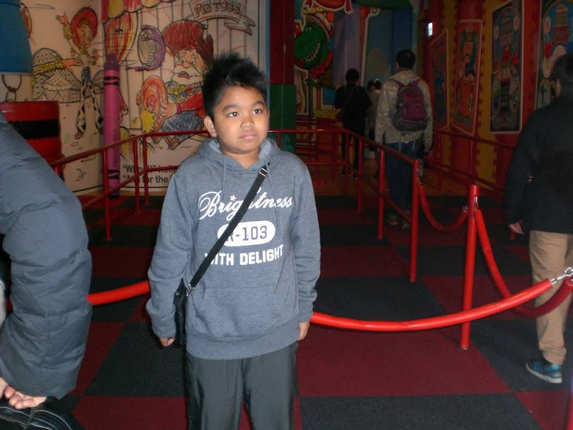
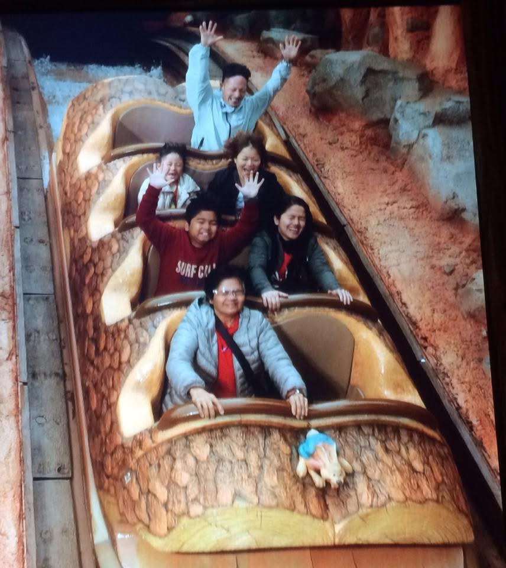
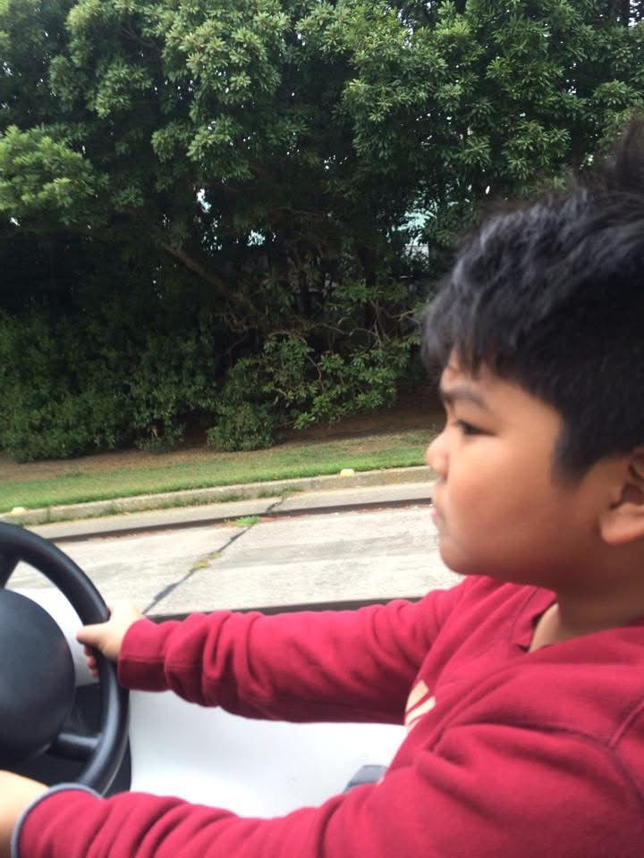
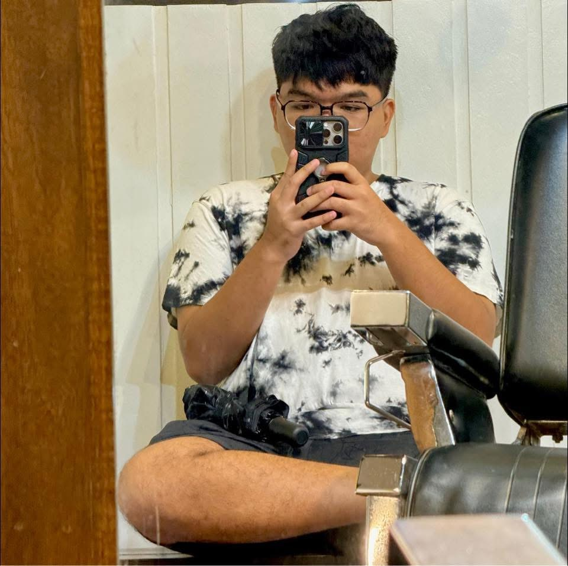
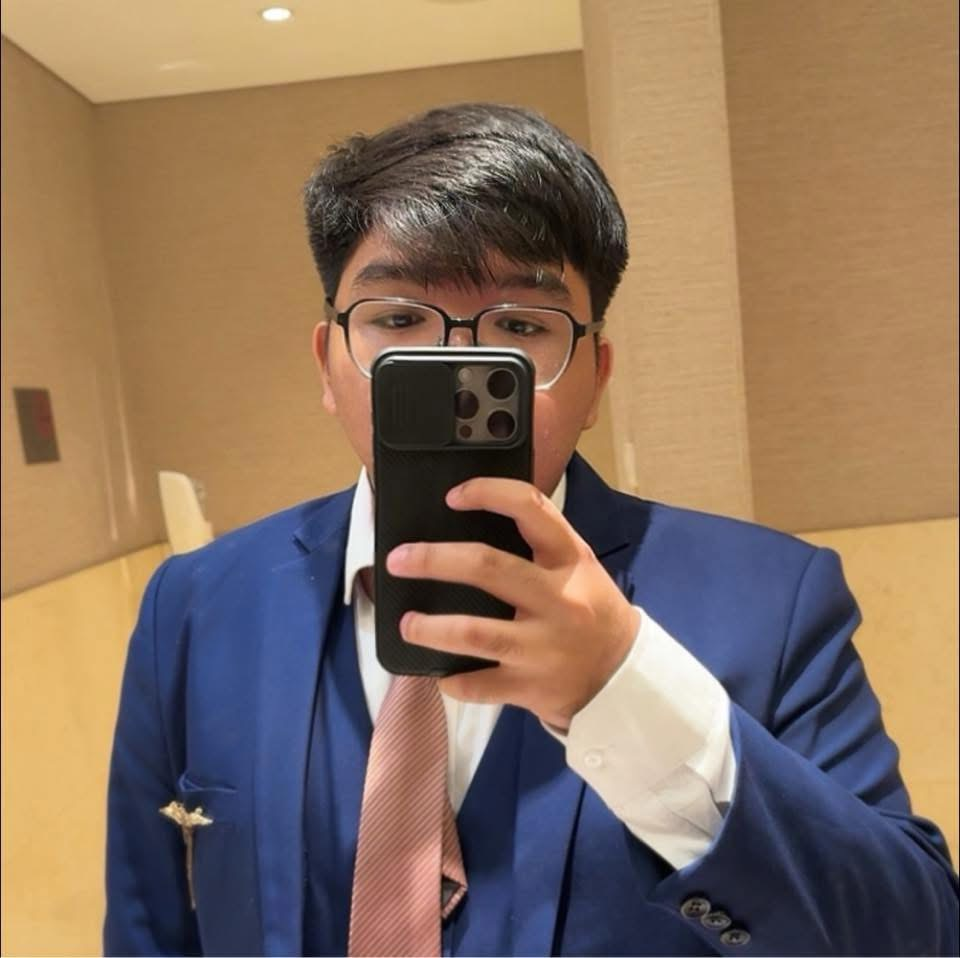

Hello, I am Mark Andrei Trinidad.
Originally born in Abra on October 11, 2003. From the day I was born I remember both my parents and my grandparents caring for me. They said that growing up I was an energetic child and that I used to always want to ride with my father on his motorcycle. I would always cry when I didn't get what I wanted. I went to preschool at St Ignatius School in Abra as well. I remember my parents signing me up for boys scout. And I also remember all the stuff I did there.

I would always play with my other classmates and just have fun at school. I would always watch TV when there’s no school. Much so that my parents were worried that I would just watch all the time. And my cousins would always take me to the computer shop to play. I was also addicted to playing at the computer shop. We would always play Cabal or Dota 1 on the computer. I remember always having fun playing with them just messing around all the time. Playing basketball and other games just to pass time. When grade 1 came, My parents transferred me to a christian school with strict dress rules. I would always hate wearing my uniform because it was so hot. But it was just the usual stuff for me, I would always cry when we would go to school because I just want to spend my days on the computer or just watching TV and playing with my friends. And I would always cry when it was sundays because our school made us go to mass every sunday for an activity. I remember hating it because it was so boring at the time, But growing up I appreciated my religion and god. That was my usual routine for grade 1, I would hate going to school but go anyway and then play or watch TV after school. And my dad would always take me to places with my other cousins to play because I’m an only child but I was used to being alone at the time. Maybe it was just another way to cope with loneliness, that's why I would always play on the computer or watch TV. After My first grade my parents decided to move to La Union and that's where I enrolled at Lorma Colleges. We moved to our new house and I was afraid to go to class at the time because I really didn’t know anyone and the place just felt uncomfortable and unfamiliar with everything. I remember going on the first day and I didn’t know which room to go to. I just cried until a teacher helped me because I was alone at the time. But sure enough after like 2 weeks of school I had a group of friends already. They helped me get familiar with the campus and they would always go to our apartment to play because our apartment at that time was only walking distance from the school. And at this time I remember a shooting game coming out as well. My father and I tried the game and we fell in love with it. It was called special forces and I remember my father and I would take turns playing the game. It was our favorite pastime. We would talk about the game all the time and I would be excited to go home and play with my dad. And things would usually go on like this. And in my fifth and sixth grade my mom and dad would take me to japan with them as they both worked there. I remember going to a lot of places like Disneyland, Tokyo, and going to see sakura trees bloom.

It was a wonderful experience for me. It was my first time going to another country outside of philippines. And when we first landed there I remember it was night time and wondered why it was so cold over there. Because I was used to the Philippine weather. It was my first time wearing such thick clothing as well.

We would go to Disneyland and try the different attractions over there and I had such a blast just playing and wandering around. There were so many people as well so it was hard to go to the rides because it was usually like 1 - 2 hours wait time for them.

And I remember going to the city and seeing a lot of skyscrapers, I'm from the province so this was also a first time for me. They were so advanced in technology at the time and their structures were so well built and kept clean as well. Their streets would always smell like coffee and bread because of the shops nearby and I fell in love with ramen as well. Their cuisine culture has so much diversity and a lot of different types of cuisine is available there as well. I would remember eating foreign food all the time and I would love it.


I would also always go to parks there. I would always play with the stuff there. And experiencing going to a shrine was also nice because of the vibes it brings and their culture was so much fun. They had a lot of festivals over there as well. I always remember going to Japan every school year. Going there all the time was such an experience for me, And I would spend the time there with my parents as well which makes it much more special.

Going forward after the pandemic, I graduated from senior high school and decided to go with BSBA for my first program. At the start of the college year I really didn’t know which program to choose and i told my parents that i want to take a gap year to think about my program and try to take a break as well while i'm at it. But they insisted I just take any program and my friends recommended BSBA to me so I just went with it. It was fun spending a school year with them but halfway through the program I wanted to be in the IT field. So here I am today.
